전산응용기계제도기능사 (2008-02-03 기출문제)
1과목: 기계재료 및 요소
1. 다음 중 Cr 또는 Ni을 다량 첨가하여 내식성을 현저히 향상시킨 강으로서 조직상 페라이트계, 마텐자이트계, 오스테나이트계 등으로 분류되는 합금강은?
- 규소강
- 스테인리스강
- 쾌삭강
- 자석강
(정답률: 73%)

2. 구리(Cu)에 관한 다음 사항 중 틀린 것은?
- 비중이 1.7 이다.
- 용융점이 1083℃ 정도이다.
- 비자성으로 내식성이 철강보다 우수하다.
- 전기 및 열의 양도체이다.
(정답률: 61%)
3. 브레이크 슈를 바깥쪽으로 확장하여 밀어 붙이는데 캠이나 유압장치를 사용하는 브레이크는?
- 드럼 브레이크
- 원판 브레이크
- 원추 브레이크
- 밴드 브레이크
(정답률: 44%)
4. 내열강의 구비 조건으로 틀린 것은?
- 기계적 성질이 우수할 것
- 화학적으로 안정할 것
- 열팽창계수가 클 것
- 조직이 안정할 것
(정답률: 80%)
5. 기계재료에 반복 하중이 작용하여도 영구히 파괴되지 않는 최대 응력을 무엇이라 하는가?
- 탄성한계
- 크리프한계
- 피로 한도
- 인장 강도
(정답률: 52%)
6. 미터 나사에 관한 설명으로 잘못된 것은?
- 기호는 M으로 표기한다.
- 나사산의 각은 60° 이다.
- 호칭 지름을 인치(inch)로 나타낸다.
- 부품의 결합 및 위치의 조정 등에 사용된다.
(정답률: 71%)
7. 백심가단 주철에서 사용되는 탈탄제는?
- 알루미나, 탄소가루
- 알루미나, 철광석
- 철광석, 밀 스케일의 산화철
- 유리탄소, 알루미나
(정답률: 38%)
8. 인장 코일 스프링에 3kgf의 하중을 걸었을 때 변위가 30㎜이었다면, 이 스프링의 상수는 얼마인가?
- 0.1kg f/㎜
- 0.2kg f/㎜
- 5 kg f/㎜
- 10kg f/㎜
(정답률: 58%)
9. 축에 키 홈을 가공하지 않고 사용하는 키(key)는?
- 성크 키
- 새들 키
- 반달 키
- 스플라인
(정답률: 59%)
10. 뜨임은 보통 어떤 강재에 하는가?
- 가공 경화된 강
- 담금질하여 경화된 강
- 용접 응력이 생긴 강
- 풀림하여 연화된 강
(정답률: 61%)
2과목: 기계가공법 및 안전관리
11. 고강도 알루미늄 합금인 초두랄루민의 주성분은?(문제 오류로 논란이 많은 문제인듯 합니다. 해설에 자세한 설명이 있습니다. 정답은 1번, 2번 모두 해당한다고 보여지며 여기서는 2번을 누르면 정답 처리 됩니다. 자세한 내용은 해설을 확인하세요.
- Al-Cu-Mg-Zn
- Al-Cu-Mg-Mn
- Al-Cu-Si-Mn
- Al-Cu-Si-Zn
(정답률: 72%)
12. 평 벨트의 이용 방법 중 이음 효율이 가장 좋은 것은?
- 이음쇠 이음
- 가죽끈 이음
- 철사 이음
- 접착제 이음
(정답률: 54%)
13. 베어링의 호칭 번호 6304에서 6은 무엇인가?
- 형식기호
- 치수기호
- 지름기호
- 등급기준
(정답률: 72%)
14. 모듈 3, 잇수 30과 60을 갖는 한 쌍의 표준 평기어 중심 거리는 얼마인가?
- 114㎜
- 126㎜
- 135㎜
- 148㎜
(정답률: 79%)
15. 비중이 약 2.7 이며 가볍고 내식성과 가공성이 좋으며 전기 및 열전도도가 높은 재료는?
- 금 (Au)
- 알루미늄 (Al)
- 철 (Fe)
- 은 (Ag)
(정답률: 76%)
16. 선반작업의 안전에 대한 설명 중 틀린 것은?
- 모발이나 옷자락이 회전하는 기계나 공작물에 말려들지 않도록 한다.
- 작업을 신속히 하기 위해 선반의 베드나 공구대 위에 측정기나 공구를 올려놓는다.
- 가공된 치수는 기계를 정지시킨 후 측정한다.
- 칩의 비산에 대비하여 보안경을 착용한다.
(정답률: 89%)
17. 초음파 가공의 장점이 아닌 것은?
- 구멍을 가공하기 쉽다.
- 복잡한 형상도 쉽게 가공할 수 있다.
- 부도체는 가공할 수 없다.
- 가공재료의 제한이 매우 적다.
(정답률: 55%)
18. 다음의 가공 방법 중 절삭 가공은?
- 인발
- 압연
- 보링
- 단조
(정답률: 73%)
19. 광물섬유를 화학적으로 처리하여 원액과 80%정도의 물과 혼합하여 사용하며, 표면 활성제와 부식방지제를 첨가하여 사용하는 절삭유는?
- 수용성 절삭유
- 석유
- 유화유
- 광유
(정답률: 73%)
20. 그림과 같이 일감은 제자리에서 회전하고 숫돌에 회전과 정후이송을 주어 원통의 외경을 연삭하는 방식은?
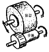
- 연삭 숫돌대 방식
- 플랜지 컷 방식
- 센터리스 방식
- 테이블 왕복식
(정답률: 41%)
21. 사인바로 각도를 측정할 때 필요 없는 것은?
- 블록 게이지
- 다이얼 게이지
- 각도 게이지
- 정반
(정답률: 35%)
22. 가장 높은 정밀도를 필요로 할 때 선택해야 하는 블록 게이지 종류는?
- 공작용
- 검사용
- 참조용
- 표준용
(정답률: 30%)
23. 슬로터의 크기를 나타내는 것 중 잘못된 것은?
- 램의 최대 행정거리
- 회전테이블의 지름
- 테이블의 이동거리
- 회전테이블의 최대중량
(정답률: 54%)
24. 심압대를 이용하여 큰 쪽 지름이 ø 10 이고 작은 쪽 지름이 ø 6인 테이퍼를 가공하려 할 때 편위량(㎜)은? (단, 가공물 전체가 테이퍼임)
- 2
- 3
- 4
- 6
(정답률: 35%)
25. 커터의 날 수가 10개, 1날당 이송량 0.14㎜, 커터의 회전수 715 rpm으로 연강을 밀링에서 가공할 때 테이블의 이송 속도는 약 몇㎜/min인가?
- 715
- 1000
- 5100
- 7150
(정답률: 53%)
3과목: 기계제도
26. 치수 공차에 대한 설명으로 옳지 않은 것은?
- 최대 허용 한계 치수와 최소 허용 한계 치수의 차를 공차라 한다.
- 구멍일 경우 끼워 맞춤 공차의 적용범위는 IT6 ~ IT10이다.
- IT 기본 공차의 등급 수치가 작을수록 공차의 범위 값은 크다.
- 구멍일 경우에는 영문 대문자로 축일 경우에는 영문 소문자로 표기한다.
(정답률: 64%)
27. 표면 거칠기 값 (6.3) 만을 직접 면에 지시하는 경우 표시방향이 잘못된 것은?
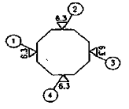
- ①
- ②
- ③
- ④
(정답률: 62%)
28. 다음 그림에서 A부분을 침탄 열처리를 하려고 할 때 표시하는 선으로 옳은 것은?
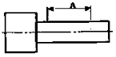
- 굵은 1점 쇄선
- 가는 파선
- 가는 실선
- 가는 2점 쇄선
(정답률: 68%)
29. 물체의 무게 중심선을 정면도 상에 표시할 때 사용하는 선의 종류는?
- 가는 1점 쇄선
- 가는 2점 쇄선
- 가는 실선
- 굵은 실선
(정답률: 38%)
30. 부품의 표면에 광명단 또는 스템프 잉크를 칠한 다음 용지에 찍어 실제 형상으로 모양을 뜨는 방법은?
- 프린트법
- 모양뜨기법
- 프리핸드법
- 청사진법
(정답률: 70%)
31. 다음 그림과 같은 투상도의 명칭은?
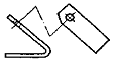
- 부분 투상도
- 보조 투상도
- 국부 투상도
- 회전 투상도
(정답률: 63%)
32. 도면 관리에서 다른 도면과 구별하고 도면 내용을 직접 보지 않고도 제품의 종류 및 형식 등의 도면 내용을 알 수 있도록 하기 위해 기입해야하는 것은?
- 도면 번호
- 도면 척도
- 도면 양식
- 부품 번호
(정답률: 60%)
33. 다음 중 2종류 이상의 선이 같은 장소에서 겹칠 때 가장 우선되는 선은?
- 무게 중심선
- 치수선
- 외형선
- 치수 보조선
(정답률: 87%)
34. 기하공차의 구분에서 자세공차에 해당하지 않는 것은?
- 평행도 공차
- 직각도 공차
- 경사도 공차
- 진직도 공차
(정답률: 69%)
35. 다음 중 도면에 반드시 마련해야 하는 사항은?
- 비교 눈금
- 도면의 구역
- 표제란
- 재단 마크
(정답률: 80%)
36. 다음은 제 3각법으로 정면도와 우측면도를 나타낸 것이다. ㉮에 들어갈 평면도로 맞는 것은?
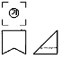
(정답률: 49%)
37. 표면 거칠기의 면 지시 기호에 대한 것 중 e의 지시 사항은?
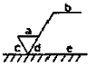
- 가공 방법
- 표면 파상도
- 다듬질 여유
- 줄무늬 방향의 기호
(정답률: 60%)
38. 다음은 치수 보조기호에 대한 설명이다. 틀린 것은?
- C : 45도 모따기 기호
- SR : 구의 반지름 기호
- ( ) : 직접적으로 필요하지 않으나 참고로 나타낼 때 사용하는 참고 치수기호
- t : 리벳이음 등에서 피치를 나타낼 때 사용하는 피치 기호
(정답률: 84%)
39. 회전도시 단면도에 대한 설명으로 틀린 것은?
- 핸들, 림, 리브 등의 절단면은 45° 회전하여 표시한다.
- 절단한 곳의 전후를 끊어서 그 사이에 그릴 수 있다.
- 절단선의 연장선 위에 그린다.
- 도형 내의 절단한 곳에 겹쳐서 가는 실선으로 그린다.
(정답률: 45%)
40. 구멍 치수가
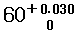
, 축 치수가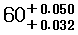
일 때 최대 죔새는?(오류 신고가 접수된 문제입니다. 반드시 정답과 해설을 확인하시기 바랍니다.)- 0.020
- 0.032
- 0.⑤0
- 0.002
(정답률: 70%)
41. 다음 등각도를 3각법으로 투상할 때 평면도로 맞는 것은?
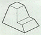
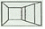
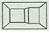
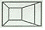
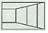
(정답률: 54%)
42. [그림]을 보고, 치수 공차에 대한 설명으로 틀린 것은?
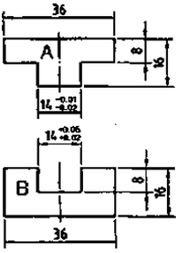
- A부품의 끼워맞춤 부위 치수 공차는 0.03 이다.
- A부품의 끼워맞춤 부위 최대 허용 한계 치수는 13.99이다.
- B부품의 끼워맞춤 부위 최소 허용 한계 치수는 14.02이다.
- A와 B 부품의 끼워맞춤 부위 기준 치수는 14이다.
(정답률: 57%)
43. 다음의 기하공차 기호를 바르게 해석한 것은?
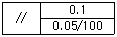
- 평행도가 전체 길이에 대해 0.1mm, 지정길이 100mm에 대해 0.⑤mm의 허용치를 갖는다.
- 평행도가 전체 길이에 대하 0.⑤mm, 지정길이 100mm에 대해 0.1mm의 허용치를 갖는다.
- 대칭도가 전체 길이에 대하 0.1mm, 지정길이 100mm에 대해 0.⑤mm의 허용치를 갖는다.
- 대칭도가 전체 길이에 대하 0.⑤mm, 지정길이 100mm에 대해 0.1mm의 허용치를 갖는다.
(정답률: 75%)
44. 물체를 입체적으로 나타내는 특수 투상도가 아닌 것은?
- 투시 투상도
- 등각 투상도
- 사투상도
- 정투상도
(정답률: 54%)
45. 다음 중 치수 기입 요소가 아닌 것은?
- 치수선
- 치수 보조선
- 화살표
- 치수 경계선
(정답률: 67%)
46. 보기와 같은 배관설비도면에서 글로브 밸브를 나타내는 기호는?
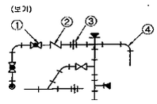
- ①
- ②
- ③
- ④
(정답률: 68%)
47. 다음 용접이음 중 맞대기 이음은 어느 것인가?
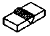
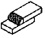
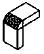
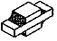
(정답률: 66%)
48. 다음 그림은 어떤 키(key)를 나타낸 것인가?
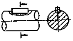
- 묻힘키
- 안장키
- 접선키
- 원뿔키
(정답률: 70%)
49. 기계제도에서 축을 도시할 때의 설명으로 틀린 것은?
- 중심선을 수평방향으로 놓고 축을 길게 놓인 상태로 그린다.
- 축의 가공방향은 관계없이 직경이 큰 쪽이 오른쪽에 있도록 그린다.
- 축은 길이 방향으로 절단하여 온 단면도로 표현하지 않는다.
- 단면모양이 같은 긴축은 중간 부분을 파단하여 짧게 표현하고, 전체 길이를 기입한다.
(정답률: 62%)
50. 다음의 나사를 설명한 것으로 잘못된 것은?
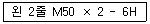
- 왼쪽 2줄 미터가는 나사
- 수나사로 2줄 나사
- 호칭지름 50mm
- 나사의 등급은 6H
(정답률: 61%)
51. 다음 나사를 제도하는 방법을 설명한 것 중 옳은 것은?
- 암나사의 골을 표시하는 선은 굵은 실선으로 그린다.
- 수나사의 바깥지름을 나타내는 선은 가는 실선으로 그린다.
- 완전 나사부와 불완전 나사부의 경계선은 굵은 실선으로 그린다.
- 암나사 탭구멍의 드릴 자리는 118°의 굵은 실선으로 그린다.
(정답률: 66%)
52. 표준 스퍼기어에서 모듈이 2이고, 잇수가 50일 때 이끝원 지름은 얼마인가?
- 96mm
- 100mm
- 102mm
- 104mm
(정답률: 53%)
53. 호칭번호가 6026P6인 단열 깊은 홈 볼 베어링의 안지름 치수는 몇mm인가?
- 6
- 26
- 30
- 130
(정답률: 73%)
54. 다음 중 스프링 제도에 대한 설명으로 틀린 것은?
- 코일 스프링은 원칙적으로 하중이 걸린 상태에서 그린다.
- 겹판스프링은 원칙적으로 스프링 판이 수평한 상태에서 그린다.
- 그림에 단서가 없는 코일 스프링은 오른쪽으로 감긴 것을 표시한다.
- 코일 스프링이 왼쪽으로 감긴 경우는 “감긴방향 왼쪽” 이라고 표시한다.
(정답률: 73%)
55. 스프로킷휠의 제도시 바깥지름은 어떤 선으로 도시하는가?
- 굵은 실선
- 가는 실선
- 굵은 파선
- 가는 1점 쇄선
(정답률: 75%)
56. 기어의 제도시 축 방향에서 본 측면도의 이뿌리원을 나타낼 때 사용하는 선은?
- 굵은 실선
- 가는 1점 쇄선
- 가는 실선
- 은선
(정답률: 59%)
57. CAD시스템에서 데이터 입력 장치가 아닌 것은?
- 플로터
- 마우스
- 조이스틱
- 태블릿
(정답률: 80%)
58. 좌표원점 (0,0)을 기준으로 하여 X, Y축 방향의 거리로 표시되는 좌표는?
- 사용자 좌표
- 절대 좌표
- 상대 좌표
- 원통 좌표
(정답률: 82%)
59. 다음 컴퓨터의 처리 속도 단위 중 가장 빠른 시간 단위는?
- ㎳
- ㎲
- ㎱
- ㎰
(정답률: 68%)
60. 3차원 물체를 외부형상 뿐만 아니라 내부 구조의 정보까지도 만들어 주는 모형으로 체적, 무게중심, 관성 모멘트 등의 물리적 성질을 가장 잘 제공하는 모델링은?
- 와이어 프레임 모델링
- 서피스 모델링
- 솔리드 모델링
- 애니메이션 모델링
(정답률: 75%)